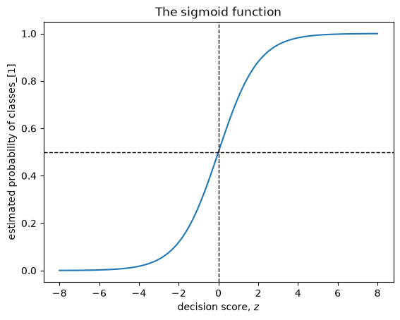

from pathlib import Path
import matplotlib.pyplot as plt
import numpy as np
import pandas as pd
from sklearn.dummy import DummyClassifier, DummyRegressor
from sklearn.linear_model import LogisticRegression, Ridge
from sklearn.metrics import log_loss, mean_squared_error
from sklearn.model_selection import cross_validate, train_test_split
from sklearn.neighbors import KNeighborsClassifier
from sklearn.pipeline import make_pipeline
from sklearn.preprocessing import StandardScaler
from sklearn.svm import SVC
DATA_DIR = Path("data")Chapter 7: Linear Models
By the end of this chapter, you will be able to:
- Explain how linear models make predictions using coefficients and an intercept.
- Describe the role of a loss function in fitting a supervised machine learning model.
- Contrast parametric linear models with a non-parametric model such as \(k\)-NN.
- Explain at a high level how regularization affects a linear model.
- Fit and use
Ridgefor regression andLogisticRegressionfor classification. - Relate the
alphahyperparameter ofRidgeand theChyperparameter ofLogisticRegressionto model complexity. - Explain how logistic regression converts a linear score into a probability and a class prediction.
- Interpret linear-model coefficients while recognizing the effects of scaling, correlated features, and non-causal associations.
- Describe important strengths and limitations of linear models.
Linear models summarize the relationship between the features and target using one coefficient per feature and an intercept. Prediction then requires only a weighted sum.
This compact prediction rule makes linear models fast and often relatively easy to inspect. It also restricts the relationships they can represent. In this chapter, we will develop the common machinery behind linear regression and logistic regression, examine how these models learn their coefficients, and consider when a linear relationship is—and is not—a useful approximation.
TipSee also
The accompanying linear-model slides provide a lecture-oriented overview of the ideas in this chapter.
Imports
What makes a model linear?
Suppose we want to predict a student’s exam grade from the number of hours they studied. A linear model represents its prediction as a line:
\[ \hat{y} = w_1x_1 + b. \]
Here, \(x_1\) is the number of study hours, \(w_1\) is the coefficient (or weight), and \(b\) is the intercept (or bias). The coefficient determines how much the prediction changes when study time increases by one hour. The intercept is the prediction when the feature equals zero, whether or not that value is meaningful in the application.
study_data = pd.DataFrame(
{
"hours": [1, 2, 3, 4, 5, 6, 7],
"grade": [52, 55, 63, 68, 72, 81, 85],
}
)
study_model = Ridge(alpha=1.0)
study_model.fit(study_data[["hours"]], study_data["grade"])
hours_grid = pd.DataFrame({"hours": np.linspace(0, 8, 100)})
plt.scatter(study_data["hours"], study_data["grade"], label="training examples")
plt.plot(hours_grid["hours"], study_model.predict(hours_grid), color="tab:orange", label="fitted model")
plt.xlabel("hours studied")
plt.ylabel("exam grade")
plt.legend();
The line does not need to pass through every training example. Fitting must choose a coefficient and intercept from many possible values. Shortly, we will look under the hood of fit and introduce the criterion used to make that choice.
pd.Series(
{
"coefficient": study_model.coef_[0],
"intercept": study_model.intercept_,
"prediction_for_5_hours": study_model.predict(pd.DataFrame({"hours": [5]}))[0],
}
)coefficient 5.517241
intercept 45.931034
prediction_for_5_hours 73.517241
dtype: float64With more features, the same idea becomes
\[ \hat{y} = w_1x_1 + w_2x_2 + \cdots + w_dx_d + b = \mathbf{w}^{\mathsf T}\mathbf{x} + b. \]
The model learns \(d\) coefficients—one for each feature—and one intercept. With one feature, this rule describes a line; with two features, a plane; and with more features, a hyperplane. We cannot easily draw a high-dimensional hyperplane, but computing a prediction still requires only a weighted sum.
What happens during fit?
So far, we have mostly treated a scikit-learn model as an object with a convenient interface: call fit using training data, then use the fitted model to predict and evaluate new examples. Let us briefly look inside fit.
During supervised learning, a model uses the feature matrix \(X\) and its current parameters to produce predictions \(\hat{y}\). A loss function compares those predictions with the observed targets \(y\) and returns a number describing how poorly they agree. Low loss means the predictions are close to what the loss function rewards; high loss means they are not.
An optimization procedure searches for parameter values that reduce this loss. It repeatedly evaluates predictions, measures their loss, and updates the parameters. Scikit-learn performs this work when we call fit. The computational details of optimization are beyond the scope of this book; the important idea is that the loss function tells the fitting procedure what counts as a better model.

The diagram writes the prediction as \(\hat{y}=Xw\). This compact notation can include the intercept in the parameter vector \(w\) by adding a column of ones to \(X\). In scikit-learn, coefficients and the intercept are usually exposed separately through coef_ and intercept_. The optimizer adjusts both.
Loss is part of model fitting, but it is not necessarily the number reported by score. A model can minimize one training objective and be evaluated with another measure. We will see this distinction with Ridge regression.
Linear regression with Ridge
Linear regression uses a linear prediction rule for a numeric target. In this book, we will implement linear regression with scikit-learn’s Ridge estimator rather than its unregularized LinearRegression estimator. Ridge includes a safeguard called regularization, which discourages extremely large coefficients. This often makes the fitted model more stable when features contain overlapping information and can reduce overfitting.
Regularization has important mathematical details, but we only need its high-level role here: it balances fitting the training targets with keeping the coefficients from becoming unnecessarily extreme. We will use Ridge as our default linear regression model and tune its main hyperparameter in the same way we tune other model hyperparameters.
We will use California housing data to predict the median house value of a geographic district. The rows are census block groups rather than individual houses, so the target and features are aggregate measurements.
housing = pd.read_csv(DATA_DIR / "california_housing.csv")
housing = housing.drop(columns="ocean_proximity").dropna()
X_housing = housing.drop(columns="median_house_value")
y_housing = housing["median_house_value"]
X_train_h, X_test_h, y_train_h, y_test_h = train_test_split(
X_housing, y_housing, test_size=0.2, random_state=123
)
X_train_h.head()| longitude | latitude | housing_median_age | total_rooms | total_bedrooms | population | households | median_income | |
|---|---|---|---|---|---|---|---|---|
| 2851 | -118.95 | 35.38 | 35.0 | 2220.0 | 388.0 | 906.0 | 373.0 | 3.5938 |
| 16353 | -121.32 | 38.04 | 30.0 | 249.0 | 44.0 | 167.0 | 45.0 | 4.5000 |
| 13403 | -117.47 | 34.12 | 6.0 | 10565.0 | 1767.0 | 5690.0 | 1555.0 | 4.1797 |
| 1781 | -122.36 | 37.94 | 45.0 | 907.0 | 188.0 | 479.0 | 161.0 | 3.0862 |
| 2005 | -119.80 | 36.74 | 25.0 | 1717.0 | 542.0 | 1343.0 | 471.0 | 0.7990 |
We begin with a mean-prediction baseline. We then place StandardScaler and Ridge in a pipeline so that the scaler is fit separately within each cross-validation fold.
regression_models = {
"mean baseline": DummyRegressor(),
"scaled Ridge": make_pipeline(StandardScaler(), Ridge(alpha=1.0)),
}
regression_results = {}
for name, model in regression_models.items():
scores = cross_validate(model, X_train_h, y_train_h, return_train_score=True)
regression_results[name] = {
"mean_train_score": scores["train_score"].mean(),
"mean_cv_score": scores["test_score"].mean(),
}
pd.DataFrame(regression_results).T| mean_train_score | mean_cv_score | |
|---|---|---|
| mean baseline | 0.000000 | -0.000121 |
| scaled Ridge | 0.636345 | 0.634073 |
By default, regression estimators use \(R^2\) for their score method, so these values are not losses. The Ridge model improves substantially over always predicting the training mean. Later chapters examine regression metrics and their interpretation in more detail.
Squared-error loss
For one example, the difference between the observed target \(y_i\) and prediction \(\hat{y}_i\) is the residual:
\[ y_i-\hat{y}_i. \]
The sign tells us whether the model predicted too low or too high, but positive and negative residuals would cancel if we simply added them. Squared-error loss instead squares each residual. Across \(n\) training examples, the mean squared error is
\[ \operatorname{MSE} = \frac{1}{n}\sum_{i=1}^{n}(y_i-\hat{y}_i)^2. \]
A perfect prediction has zero loss. Larger errors receive disproportionately larger penalties because the residual is squared.
loss_example = pd.DataFrame(
{
"observed": [50, 70, 90],
"prediction_A": [60, 70, 80],
"prediction_B": [52, 66, 94],
}
)
loss_example.assign(
squared_error_A=(loss_example["observed"] - loss_example["prediction_A"]) ** 2,
squared_error_B=(loss_example["observed"] - loss_example["prediction_B"]) ** 2,
)| observed | prediction_A | prediction_B | squared_error_A | squared_error_B | |
|---|---|---|---|---|---|
| 0 | 50 | 60 | 52 | 100 | 4 |
| 1 | 70 | 70 | 66 | 0 | 16 |
| 2 | 90 | 80 | 94 | 100 | 16 |
pd.Series(
{
"MSE for model A": mean_squared_error(loss_example["observed"], loss_example["prediction_A"]),
"MSE for model B": mean_squared_error(loss_example["observed"], loss_example["prediction_B"]),
}
)MSE for model A 66.666667
MSE for model B 12.000000
dtype: float64A loss function defines what the fitting procedure treats as an expensive mistake. Squared error is sensitive to unusually large residuals, which may be desirable when large errors are especially costly but problematic when the target contains outliers or measurement errors. Choosing a loss therefore encodes priorities; it is not merely a computational detail.
Why Ridge? Regularization at a high level
Many sets of coefficients can fit the training data similarly, especially when features are correlated. In those situations, an unregularized fit can produce large coefficients that change substantially after small changes to the training data. Ridge adds a regularization penalty that discourages unnecessarily large coefficients.
Conceptually, Ridge asks for coefficients that fit the targets well according to squared-error loss without becoming too extreme. We do not need to study the optimization algorithm or derive the precise objective to use Ridge effectively. Regularization is best understood here as another way to control model complexity.
The hyperparameter alpha controls the strength of regularization:
- A larger
alphadiscourages large coefficients more strongly, usually producing a less flexible model with a greater risk of underfitting. - A smaller
alphaallows the model to follow the training data more closely, usually producing a more flexible model with a greater risk of overfitting.
We will use Ridge rather than setting alpha to zero or switching to LinearRegression. The appropriate positive value of alpha is data-dependent and can be selected using cross-validation.
Scaling matters because regularization acts on coefficient magnitudes. Without scaling, changing a feature from dollars to thousands of dollars changes the size of its coefficient and therefore how strongly that feature is affected by the penalty. This is why our Ridge pipeline includes StandardScaler.
alpha_results = []
for alpha in 10.0 ** np.arange(-3, 7):
ridge_pipe = make_pipeline(StandardScaler(), Ridge(alpha=alpha))
scores = cross_validate(
ridge_pipe, X_train_h, y_train_h, return_train_score=True
)
alpha_results.append(
{
"alpha": alpha,
"mean_train_score": scores["train_score"].mean(),
"mean_cv_score": scores["test_score"].mean(),
}
)
pd.DataFrame(alpha_results)| alpha | mean_train_score | mean_cv_score | |
|---|---|---|---|
| 0 | 0.001 | 0.636345 | 0.634070 |
| 1 | 0.010 | 0.636345 | 0.634070 |
| 2 | 0.100 | 0.636345 | 0.634071 |
| 3 | 1.000 | 0.636345 | 0.634073 |
| 4 | 10.000 | 0.636332 | 0.634085 |
| 5 | 100.000 | 0.635347 | 0.633318 |
| 6 | 1000.000 | 0.606943 | 0.605844 |
| 7 | 10000.000 | 0.443226 | 0.442782 |
| 8 | 100000.000 | 0.115529 | 0.115328 |
| 9 | 1000000.000 | 0.013651 | 0.013520 |
The effect of regularization is gradual, and the best value is data-dependent. We should not choose alpha by repeatedly checking the test set. Chapter 8 develops methods for selecting hyperparameters using only the training data.
Interpreting linear-model coefficients
After fitting the pipeline, we can inspect the Ridge coefficients. Because the pipeline standardizes the features first, each coefficient describes the change in the prediction associated with a one-standard-deviation increase in that feature, holding the other represented features fixed.
ridge_pipe = make_pipeline(StandardScaler(), Ridge(alpha=1.0))
ridge_pipe.fit(X_train_h, y_train_h)
ridge_coefficients = pd.Series(
ridge_pipe.named_steps["ridge"].coef_,
index=X_train_h.columns,
name="coefficient",
).sort_values()
ridge_coefficients.to_frame()| coefficient | |
|---|---|
| latitude | -90755.504776 |
| longitude | -85470.620474 |
| population | -42283.519254 |
| total_rooms | -19969.273269 |
| housing_median_age | 14668.590996 |
| households | 19226.321907 |
| total_bedrooms | 47525.803163 |
| median_income | 77102.618751 |
A positive coefficient means that increasing the feature, while keeping the other represented features fixed, increases the model’s prediction. A negative coefficient decreases the prediction. After comparable scaling, a larger absolute coefficient generally means that a one-standard-deviation change contributes more to this model’s prediction.
That interpretation needs several qualifications:
- The coefficient describes the fitted model, not necessarily how the world works. It is not a causal effect.
- Correlated features can share or exchange predictive information, making individual coefficients unstable or surprising.
- Without comparable scaling, coefficient magnitudes cannot be compared directly because a one-unit change means something different for each feature.
- A coefficient gives a constant change per unit. If the real relationship curves or depends on another feature, that summary may be inadequate.
- The intercept may not have a useful real-world interpretation if an all-zero feature vector is impossible or far outside the observed data.
Coefficients can help us understand how a model computes predictions, but they should be treated as evidence about the model rather than automatic feature importance or causal evidence.
Suppose median income and average number of rooms are strongly correlated. If the coefficient of average rooms is negative, does that establish that adding a room would lower a district’s house values? What alternative explanations could produce that coefficient?
Logistic regression
Regression produces a numeric prediction directly. For classification, we instead need to choose among classes. Despite its name, logistic regression is a classifier. Like linear regression, it first computes a weighted sum:
\[ z = \mathbf{w}^{\mathsf T}\mathbf{x}+b. \]
This value is often called the decision score or raw score. In binary classification, its sign determines which side of the decision boundary an example lies on.
We will predict whether a city is in Canada or the United States using longitude and latitude. Geography is not truly separated by one straight line—Alaska is an obvious complication—which makes this example useful for studying both the model and its limitations.
cities = pd.read_csv(DATA_DIR / "canada_usa_cities.csv")
X_cities = cities[["longitude", "latitude"]]
y_cities = cities["country"]
X_train_c, X_test_c, y_train_c, y_test_c = train_test_split(
X_cities, y_cities, test_size=0.2, random_state=123, stratify=y_cities
)
classification_models = {
"most-frequent baseline": DummyClassifier(strategy="most_frequent"),
"scaled logistic regression": make_pipeline(
StandardScaler(), LogisticRegression(random_state=123)
),
}
classification_results = {}
for name, model in classification_models.items():
scores = cross_validate(model, X_train_c, y_train_c, return_train_score=True)
classification_results[name] = {
"mean_train_accuracy": scores["train_score"].mean(),
"mean_cv_accuracy": scores["test_score"].mean(),
}
pd.DataFrame(classification_results).T| mean_train_accuracy | mean_cv_accuracy | |
|---|---|---|
| most-frequent baseline | 0.610773 | 0.610695 |
| scaled logistic regression | 0.808394 | 0.808556 |
Scores and the decision boundary
We fit the pipeline to examine a prediction. The model’s classes_ attribute records the class order. In binary logistic regression, a negative decision score selects classes_[0], while a positive score selects classes_[1]. This ordering is deterministic; the model does not randomly designate the positive class.
logistic_pipe = make_pipeline(
StandardScaler(), LogisticRegression(random_state=123)
)
logistic_pipe.fit(X_train_c, y_train_c)
example = X_test_c.iloc[[0]]
pd.DataFrame(
{
"decision_score": logistic_pipe.decision_function(example),
"prediction": logistic_pipe.predict(example),
}
)| decision_score | prediction | |
|---|---|---|
| 0 | -0.39582 | Canada |
logistic_pipe.named_steps["logisticregression"].classes_array(['Canada', 'USA'], dtype=object)The decision boundary contains feature values whose score is zero:
\[ \mathbf{w}^{\mathsf T}\mathbf{x}+b=0. \]
With two features, this boundary is a line. With three, it is a plane; with \(d\) features, it is a \((d-1)\)-dimensional hyperplane. A linear classifier can still make mistakes on its training data: a linear boundary is the form of the rule, not a requirement that the classes be perfectly separable.
x_min, x_max = X_train_c["longitude"].min() - 2, X_train_c["longitude"].max() + 2
y_min, y_max = X_train_c["latitude"].min() - 2, X_train_c["latitude"].max() + 2
xx, yy = np.meshgrid(
np.linspace(x_min, x_max, 300),
np.linspace(y_min, y_max, 300),
)
grid = pd.DataFrame({"longitude": xx.ravel(), "latitude": yy.ravel()})
grid_scores = logistic_pipe.decision_function(grid).reshape(xx.shape)
for country, marker in zip(logistic_pipe.classes_, ["o", "^"]):
mask = y_train_c == country
plt.scatter(
X_train_c.loc[mask, "longitude"],
X_train_c.loc[mask, "latitude"],
label=country,
marker=marker,
alpha=0.75,
)
plt.contour(xx, yy, grid_scores, levels=[0], colors="black", linewidths=2)
plt.xlabel("longitude")
plt.ylabel("latitude")
plt.legend()
plt.title("A linear decision boundary");
From scores to probabilities
The sign of the score is enough to choose a class, but its magnitude contains additional information. Logistic regression passes the score through the sigmoid function:
\[ \sigma(z)=\frac{1}{1+e^{-z}}. \]
The sigmoid maps any real-valued score to a number between 0 and 1. This number is the model’s estimated probability of classes_[1]. A score of zero maps to 0.5, so thresholding the probability at 0.5 is equivalent to thresholding the score at zero.
def sigmoid(z):
return 1 / (1 + np.exp(-z))
scores = np.linspace(-8, 8, 400)
plt.plot(scores, sigmoid(scores))
plt.axvline(0, color="black", linestyle="--", linewidth=1)
plt.axhline(0.5, color="black", linestyle="--", linewidth=1)
plt.xlabel("decision score, $z$")
plt.ylabel("estimated probability of classes_[1]")
plt.title("The sigmoid function");
decision_score = logistic_pipe.decision_function(example)[0]
pd.Series(
{
"sigmoid(decision_score)": sigmoid(decision_score),
"predict_proba for classes_[1]": logistic_pipe.predict_proba(example)[0, 1],
}
)sigmoid(decision_score) 0.402317
predict_proba for classes_[1] 0.402317
dtype: float64predict_proba returns one column per class in the order given by classes_. For binary classification the two probabilities sum to one. The larger probability determines the default hard prediction, but an application may choose a different threshold when different errors have different consequences.
An estimated probability is useful, but it should not automatically be treated as trustworthy confidence. A model can assign a high probability to an incorrect prediction, particularly when its assumptions are inadequate or deployment examples differ from its training data. Later chapters discuss evaluation measures and probability calibration.
Log loss
Logistic regression chooses its coefficients using log loss, also called binary cross-entropy loss. If \(p_i\) is the predicted probability of the positive class and \(y_i\) is encoded as 0 or 1, the average log loss is
\[ -\frac{1}{n}\sum_{i=1}^{n} \left[y_i\log(p_i)+(1-y_i)\log(1-p_i)\right]. \]
The formula is less important here than its behaviour. The loss is small when the model assigns high probability to the observed class. It grows when the model assigns the observed class a low probability, and a confident incorrect prediction receives a particularly large penalty.
probability_examples = pd.DataFrame(
{
"observed_class": [1, 1, 1, 0],
"probability_of_class_1": [0.90, 0.60, 0.10, 0.90],
},
index=["confident correct", "less confident correct", "confident incorrect", "confident incorrect (class 0)"],
)
probability_examples["log_loss"] = [
log_loss([observed], [[1 - probability, probability]], labels=[0, 1])
for observed, probability in zip(
probability_examples["observed_class"],
probability_examples["probability_of_class_1"],
)
]
probability_examples| observed_class | probability_of_class_1 | log_loss | |
|---|---|---|---|
| confident correct | 1 | 0.9 | 0.105361 |
| less confident correct | 1 | 0.6 | 0.510826 |
| confident incorrect | 1 | 0.1 | 2.302585 |
| confident incorrect (class 0) | 0 | 0.9 | 2.302585 |
Accuracy would treat probabilities 0.51 and 0.99 identically when class 1 is observed: both produce the correct class. Log loss distinguishes them because fitting logistic regression is concerned with the probability assigned to the observed class, not only which side of 0.5 wins.
As with Ridge, the fitting objective also contains a regularization penalty. In scikit-learn’s LogisticRegression, C controls regularization in the opposite direction from Ridge’s alpha:
- Smaller
Cmeans stronger regularization and usually a less flexible model. - Larger
Cmeans weaker regularization and usually a more flexible model.
This reversal is easy to forget: Ridge exposes regularization strength through alpha, whereas logistic regression exposes an inverse regularization strength through C.
C_results = []
for C in 10.0 ** np.arange(-4, 5):
model = make_pipeline(
StandardScaler(), LogisticRegression(C=C, random_state=123)
)
scores = cross_validate(model, X_train_c, y_train_c, return_train_score=True)
C_results.append(
{
"C": C,
"mean_train_accuracy": scores["train_score"].mean(),
"mean_cv_accuracy": scores["test_score"].mean(),
}
)
pd.DataFrame(C_results)| C | mean_train_accuracy | mean_cv_accuracy | |
|---|---|---|---|
| 0 | 0.0001 | 0.610773 | 0.610695 |
| 1 | 0.0010 | 0.610773 | 0.610695 |
| 2 | 0.0100 | 0.714084 | 0.718895 |
| 3 | 0.1000 | 0.799405 | 0.802496 |
| 4 | 1.0000 | 0.808394 | 0.808556 |
| 5 | 10.0000 | 0.812872 | 0.808556 |
| 6 | 100.0000 | 0.814375 | 0.808556 |
| 7 | 1000.0000 | 0.814375 | 0.808556 |
| 8 | 10000.0000 | 0.814375 | 0.808556 |
Confidence and model limitations
For a linear classifier, examples close to the decision boundary have scores near zero and probabilities near 0.5. Examples far from the boundary generally receive more extreme probabilities. Distance from the boundary describes the model’s certainty under its fitted rule; it does not guarantee that the rule is correct.
train_predictions = X_train_c.copy()
train_predictions["observed"] = y_train_c
train_predictions["predicted"] = logistic_pipe.predict(X_train_c)
train_predictions["decision_score"] = logistic_pipe.decision_function(X_train_c)
train_predictions["predicted_probability"] = logistic_pipe.predict_proba(X_train_c).max(axis=1)
train_predictions.sort_values("predicted_probability").head(5)| longitude | latitude | observed | predicted | decision_score | predicted_probability | |
|---|---|---|---|---|---|---|
| 48 | -122.3301 | 47.6038 | USA | Canada | -0.058617 | 0.514650 |
| 33 | -87.6244 | 41.8756 | USA | USA | 0.088508 | 0.522113 |
| 31 | -74.0060 | 40.7127 | USA | Canada | -0.121136 | 0.530247 |
| 61 | -87.9225 | 43.0350 | USA | Canada | -0.186385 | 0.546462 |
| 130 | -83.0353 | 42.3171 | Canada | Canada | -0.187538 | 0.546747 |
train_predictions.loc[
train_predictions["observed"] != train_predictions["predicted"]
].sort_values("predicted_probability", ascending=False).head(5)| longitude | latitude | observed | predicted | decision_score | predicted_probability | |
|---|---|---|---|---|---|---|
| 1 | -134.4197 | 58.3019 | USA | Canada | -2.254809 | 0.905065 |
| 24 | -68.3219 | 47.3556 | USA | Canada | -1.965534 | 0.877131 |
| 22 | -69.2275 | 47.4562 | USA | Canada | -1.957328 | 0.876243 |
| 23 | -68.5897 | 47.2587 | USA | Canada | -1.931892 | 0.873459 |
| 25 | -67.9353 | 47.1575 | USA | Canada | -1.930796 | 0.873338 |
The second table deliberately searches for confident mistakes rather than relying on hard-coded row numbers. Some cities in Alaska can be geographically far from the model’s straight boundary even though they belong to the United States. The model can therefore be confidently wrong because its linear representation cannot express the actual geography.
This is a general lesson: probability estimates are conditional on the model, its features, and the data used to fit it. A high value from predict_proba is not a guarantee.
Other linear classifiers
A support vector machine can also use a linear decision boundary. Logistic regression and a linear SVM both compute a weighted sum and can expose coefficients and an intercept, but they learn them using different loss functions. Logistic regression uses log loss and naturally provides probabilities. A linear SVM uses hinge loss and emphasizes whether examples lie on the correct side of a margin.
In scikit-learn, LinearSVC is designed specifically for linear classification, while SVC(kernel="linear") provides a linear-kernel version of the kernel SVM introduced in Chapter 4. The models may produce similar-looking boundaries, but their coefficients need not be identical because their fitting objectives differ. Logistic regression will be our main linear classifier when probability estimates are useful.
Now that we have seen what linear models learn and how they make predictions, we can compare their fitted representation with the \(k\)-NN approach from Chapter 4.
Parametric and non-parametric models
Linear models are commonly described as parametric. Once the feature representation has been fixed, a linear model has a fixed-size prediction rule. A model with 100 features learns 100 coefficients and an intercept whether the training set contains 1,000 examples or one million.
\(k\)-NN is commonly described as non-parametric. It does not compress the training data into a fixed collection of coefficients. Fitting mainly stores the training examples, and prediction searches those examples for nearby points. As the training set grows, the stored model and the work required for a straightforward neighbour search also grow.
“Non-parametric” does not mean that a method has no settings: \(k\), the distance measure, and neighbour weighting are hyperparameters. Similarly, “parametric” does not necessarily mean small or unable to overfit. A linear model applied to 100,000 features learns 100,001 parameters, and it may still overfit without enough data or regularization.
| Question | Linear model | \(k\)-NN |
|---|---|---|
| What does fitting retain? | Coefficients and an intercept | The training examples |
| Where is most computation? | During fitting | During prediction |
| What shapes can it represent directly? | A linear function or boundary | Flexible, locally determined shapes |
| What happens as training rows are added? | The number of coefficients stays fixed for fixed \(d\) | Storage and straightforward prediction work grow |
| What assumption does it make? | A linear relationship is a useful approximation | Nearby examples tend to have similar targets |
These are tendencies, not guarantees about which model will perform better. A linear model can be a strong choice when the linear approximation is appropriate, when the feature matrix is large and sparse, or when fast prediction matters. \(k\)-NN can capture local structure that a linear model misses, but distance becomes difficult to use effectively in some high-dimensional representations.
Strengths and limitations of linear models
Linear models are often strong baselines. They are typically fast to predict with, scale to many examples and features, and work well with sparse representations such as bag-of-words. Their coefficients make the calculation behind a prediction relatively transparent. Regularization provides a direct way to control model complexity.
Their central restriction is also clear: the prediction is linear in the represented features. Logistic regression separates classes with a hyperplane, and linear regression assigns the same coefficient to a feature throughout the feature space. Curved relationships, local patterns, and interactions may therefore be missed unless useful transformed or interaction features are supplied.
This limitation does not mean the raw data must literally follow a straight line. A linear model is linear in its features. Later feature-engineering techniques can create features that let a linear model represent some nonlinear relationships, although every transformation introduces new assumptions and potential complexity.
Exercises
Exercise 7.1: Count what the models retain
A dataset has 100 input features. Compare fitting a logistic-regression model on (a) 1,000 examples and (b) one million examples. How many coefficients and intercepts are learned in each case for binary classification? How would the stored fitted object differ conceptually if we instead used \(k\)-NN? Explain why “non-parametric” does not mean “has no hyperparameters.”
Exercise 7.2: Trace a regression prediction and its loss
A linear model uses \(\hat y=3x+10\). Compute its predictions for \(x=2\) and \(x=5\). If the observed targets are 18 and 20, compute each residual, each squared error, and the mean squared error. Which example has more influence on the squared-error objective?
Exercise 7.3: Reason about regularization
For each change below, predict whether model flexibility will usually increase or decrease. Explain your reasoning rather than relying only on the parameter name.
- Increase Ridge’s
alphafrom 1 to 100. - Increase logistic regression’s
Cfrom 1 to 100. - Standardize a feature measured in dollars before applying Ridge.
Why would comparing coefficient magnitudes before scaling be misleading?
Exercise 7.4: From score to probability
For a binary logistic-regression model, predict whether each decision score corresponds to classes_[0] or classes_[1]: \(-3\), \(0\), and \(2\). Without calculating exact values, order their probabilities for classes_[1]. Which prediction is closest to the decision boundary?
Exercise 7.5: Diagnose an interpretation
A fitted housing model gives distance_to_downtown a negative coefficient. A report concludes: “Moving a house one kilometre farther from downtown will cause its price to fall by exactly the coefficient.” Identify at least three problems with this conclusion. Discuss the model-versus-world distinction, scaling, correlated features, and whether the relationship is plausibly linear.
Exercise 7.6: Choose between linear models and \(k\)-NN
Consider (a) a small two-dimensional dataset with a strongly curved class boundary and (b) a bag-of-words dataset with 100,000 sparse features and strict prediction-time requirements. Which of \(k\)-NN and logistic regression would you try first in each case? State the assumptions behind your choices and describe evidence that could change your mind.
Summary
A linear model represents a prediction using one coefficient per feature and an intercept. For a fixed feature representation, this gives a parametric model whose number of learned parameters does not grow with the number of training examples. In contrast, \(k\)-NN retains the training examples and uses them directly during prediction.
Fitting requires a definition of what makes one set of coefficients better than another. Ridge combines squared-error loss with a penalty on large coefficients. Logistic regression converts a linear decision score into a probability using the sigmoid function and fits its coefficients using log loss plus regularization. Ridge’s alpha increases with regularization strength, whereas logistic regression’s C moves in the opposite direction.
Coefficients expose how a fitted linear model computes its predictions, but they require careful interpretation. Their magnitudes depend on feature scales, correlated features can make them unstable, and associations learned for prediction are not automatically causal. Linear models are fast, scalable, and useful for many high-dimensional problems, but their linear form can miss curved relationships, local patterns, and interactions that the feature representation does not capture.